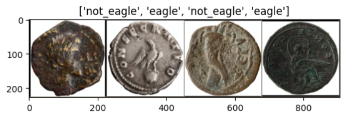
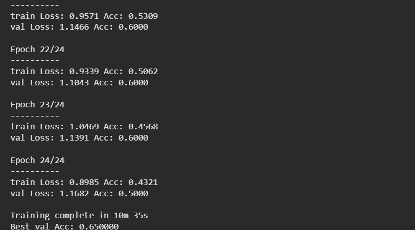
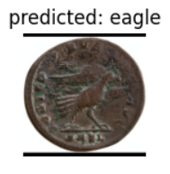
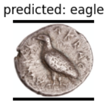
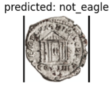
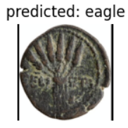

Image Classification Model
In researching coinage for this project I encountered an issue I didn’t expect to find: poor documentation. It makes sense that the coins I track down in local shops may not have all of the information I’d like to see, but during my trip I visited several museums which displayed coins without any given information. Documentation for every coin in a museum installation may be too high an ask, especially when coins are not a major selling point for a site.
I couldn’t help but wonder, though, since many of these smaller museums did not have their collections displayed online, if perhaps the difficulty and time-commitment that comes with identifying and documenting every individual coin in a collection was a limiting factor. I know from experience that very few tools exist that can accurately identify coins, and none that I know of for free. At some point during this project, I had the idea
As a proof of concept, I used images from the MANTIS coin database to train a neural network that can identify eagle-coins.

Development Process
To start, I invested a significant amount of my spare time into reading sites and watching lectures on the fundamentals of machine learning and reinforcement training, including but not limited to the recordings of lectures from fast.ai. Once I had a strong fundamental understanding of the concepts, I specifically dove into lectures covering image classification models.
One of the most important concepts I discovered was transfer learning, which allowed me to use a pre-existing classifier for something simple and build my identifier from that base of already complete training. Transfer learning is the industry standard, with it cutting hours of training from the development of a model. I decided that, given my timeframe and other project goals, transfer learning was the best approach.
Since many tutorials for creating image classification models already exist, I was able to learn the basics of what I needed very quickly. I loaded in a simple test dataset from the internet, and began experimenting with a pre-existing classifier.
Once my test case model had learned from the previous model and was completely trained with the simple dataset, I began the training process with my coin data.
For this project I used images I collected manually— reasonable, since my model is only a proof of concept, although for useful accuracy an automated approach would certainly be better. I selected 51 images of coins prominently featuring eagles and 50 coins without eagles, specifically choosing only a handful of images I suspected the model might struggle with. I split each group into my ‘training’ and ‘value’ folders, with each folder subdivided into eagles and non-eagles. The training folder contained most of the data, with the value folder only holding ten of each image type to act as a key or point of reference for the model.

I then began training the model. I ultimately went through two phases of training, with 25 epochs each. Training the model asks it to take each image in the training folder and make a prediction based on what it already knows about my images. After it makes a prediction for the entire dataset, it reports its accuracy score and repeats the process. After all 25 passes through the dataset, the model saves the weights derived from its most accurate attempt so that it can improve upon itself in future training runs.
The first attempt was not clean, and I saw a 65% accuracy rating. This is expected, since my dataset is not large enough to reach industry standard accuracy ratings, but 65% accuracy on the first run was generally a great success. I did encounter an issue early in the process with the sizes and formatting of my images, but was able to improve the model such that it can reformat and resize images to be compatable with the way the model works.
The second run of training went faster than the first, and saw much higher accuracy at a best score of 80%. This is about the highest I could have hoped for with such a small dataset, so this second round marked the project as a success.
Finally, I ran a third session of training— which saw no improvements. Again, though, because of the small size of my dataset this was to be expected; with only ~200 total images the best accuracy a model like this can achieve should be about 80%.
Results




As seen in the four images above, the model is relatively accurate at identifying whether images of coins feature eagles or not (which tracks, based on the 80% success rate). While it is not perfect, based on the dataset it can at the very least successfully identify eagles that fit into the most typical design archetypes with high success, even if it still trips over trickier images and some non-eagle coins.
I consider this project a huge success— I learned how to build, test, and train image classification software at a small scale, and develop skills that I could later apply to a larger database.
Future Developments
While I would love to increase the size of my dataset drastically and train my model even more, I am limited by my timeframe and current skill level. If I continue developing this model I will work through increasing my count of images, epochs, and training runs to first increase its accuracy until it reaches about 97%. Simultaneously I would build a more advanced dataframe that contains archetypes of eagles from specific societies and time periods, which I would train the model to identify once its base eagle identification skill was strong enough.
One final development I would want to make would be training the model on the names of rulers within each previously trained society and era, and potentially use information on the minting series of that ruler to have the model identify a potential top 3-4 series’ a given coin could be from.
This would be very time-consuming, and as such I will likely never reach that final phase of development, but it might be reasonable to build a new dataset with coins for a specific empire, for example the Ptolemaic Empire, and train the model to identify coins from rulers first, then series’. This would be logistically much easier for me to develop as a single person, and could serve as an even better proof of concept for an all-encompassing classification model.